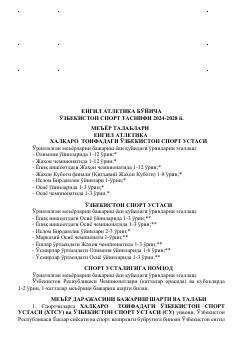

EAYengil atletika bo'yicha O'zbekiston sport tasnifi me'yor va talablari.
Mazkur hujjat 2024-2028 yillar uchun yengil atletika bo'yicha O'zbekiston sport tasnifi me'yor va talablarini belgilab beradi. Unda xalqaro toifadagi sport ustasi, sport ustasi va sport ustaligiga nomzod unvonlarini berish tartiblari, shartlari hamda musobaqa turlari batafsil keltirilgan.